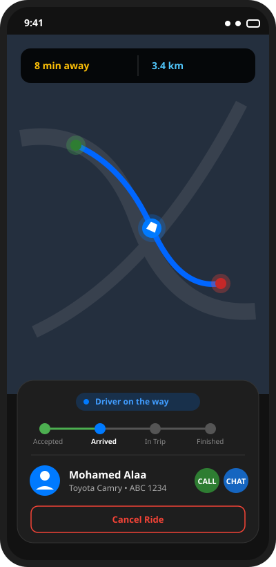
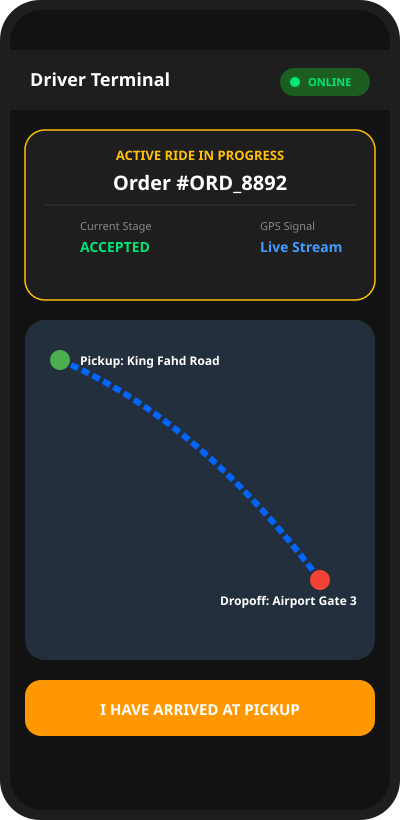
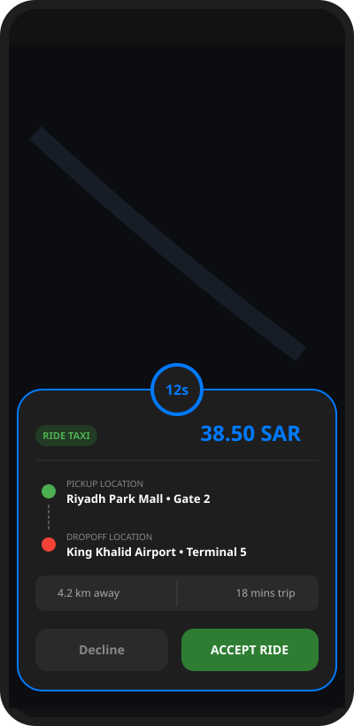
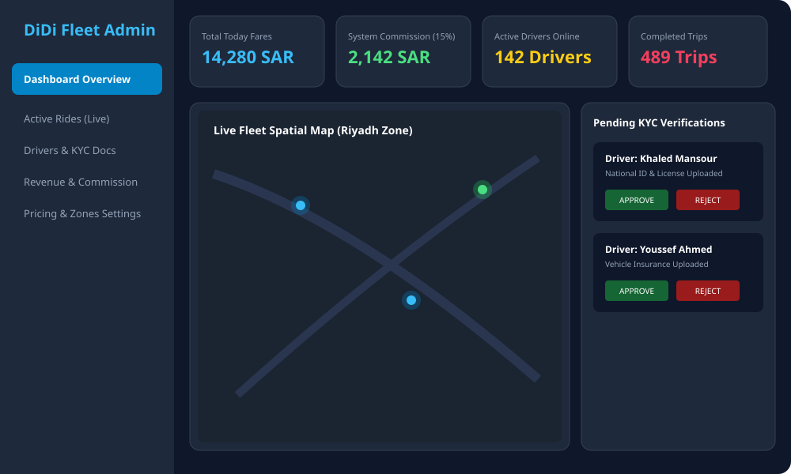

نظام برمجي مكتمل للعميل والسائق ولوحة التحكم الحية مع التتبع الجغرافي اللحظي وحساب الأجرة الديناميكي
مستودع المشروع على GitHubتتبع موقع السائق المباشر عبر الشوارع، الوقت المتوقع للوصول، والشريط الزمني لمراحل الرحلة.

ملاحظة حالة الاتصال (Online/Offline)، إرسال إحداثيات الـ GPS، والتحكم بمراحل الرحلة.

عرض تفاصيل الطلب مع عداد تنازلي للسائق، حساب الأجرة، ومواقع الركوب والوصول.

متابعة أرباح المنصة وعمولات الرحلات، خريطة موقع السائقين المباشرة، وتوثيق أوراق ورخص القيادة (KYC).
